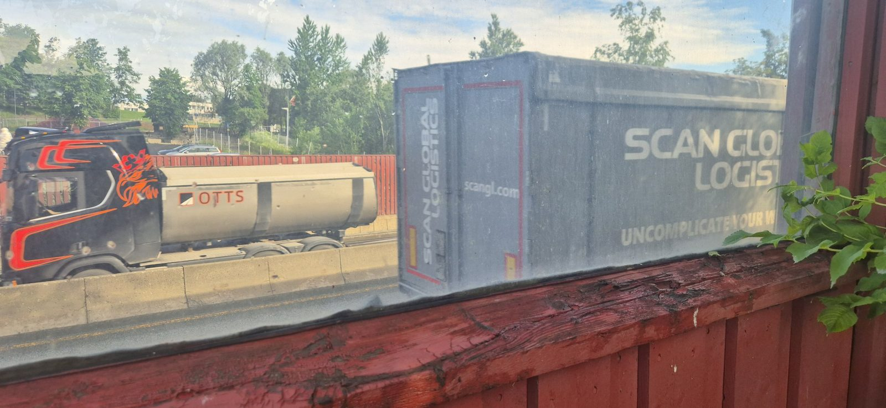
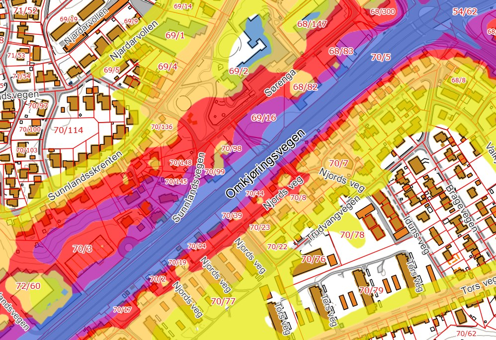
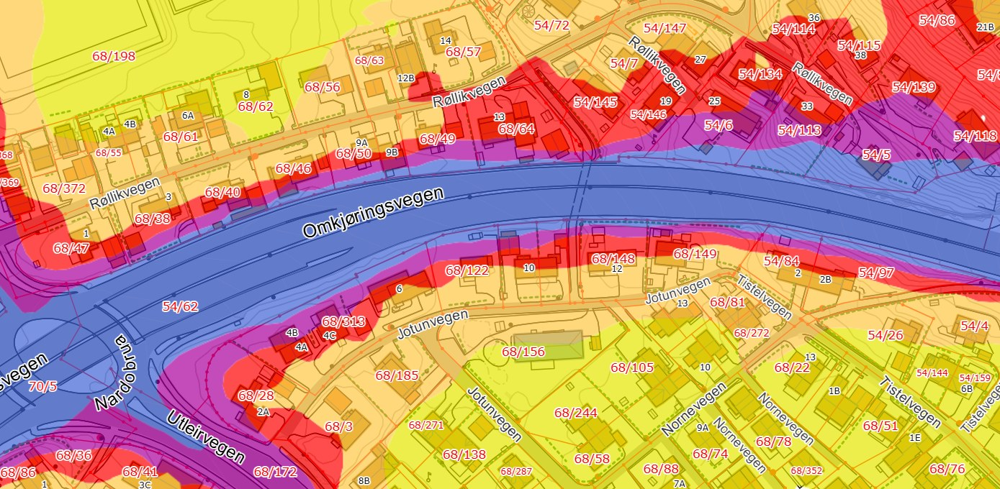
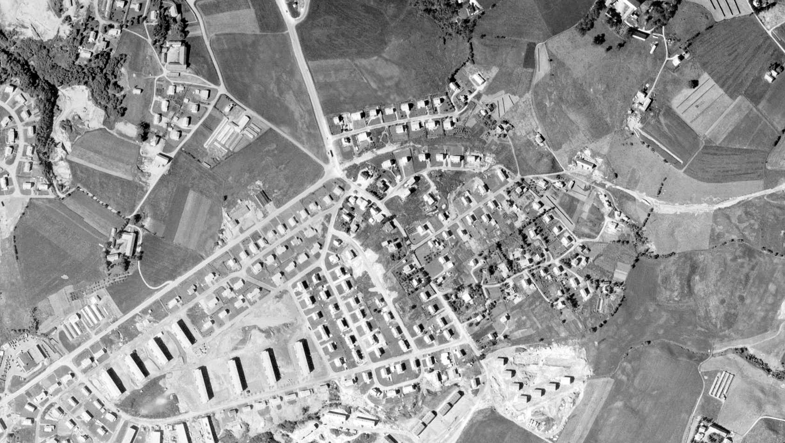

Skjermen langs Omkjøringsvegen er 35 år gammel, og trafikken er doblet siden den ble satt opp. Statens vegvesen har selv anslått at over 600 personer langs strekningen har støy over 60 dB ved boligen, både i 2013 og i 2018.
Ny støyskjerm for hele strekningen Nidarvoll-Moholtlia
Målet: en ny og effektiv støyskjerm langs hele strekningen.
Det vi ber om nå: Vi ber bystyret om å be byrådet foreslå i Miljøpakken at planleggingen ved Nardo skole og barnehage utvides til hele strekningen, også forbi boligene. Hva ny skjerm vil koste, og hvor mye den demper, er det planleggingen skal avklare.
Likebehandling
Boligene vurderes for støyskjerming etter Miljøpakkens egne kriterier. I 2021 brukte Miljøpakken disse kriteriene for skjerming av boliger: bygd før 2005 og uteareal over 60 dB. Mange av husene langs strekningen sto der allerede i 1964, og flere ligger på 69-71 dB.
Mens vi venter
Streknings-ATK og 60-sone. Streknings-ATK holder farten nede på hele strekningen, ikke bare forbi fotoboksen. Statens vegvesen ville selv forsøke å få til streknings-ATK her i 2017. Ifølge kommunens handlingsplan gir 60 i stedet for 70 km/t om lag 2 dB mindre støy. Byråden for miljø, næring og samferdsel ba Statens vegvesen om begge deler 6. oktober, men 16. oktober svarte Statens vegvesen nei.
Miljøpakken, tilbudsforespørsel 2021, s. 5. EFLA, befaringsrapporter og tabell 4, 2025. SVV, e-post 21.08.2017, sak 17/34060-20. Trondheim kommune, Handlingsplan mot støy 2024-2029, tabell 8, s. 39. Byråden, brev 06.10.2026 (2026/35646). SVV, brev 16.10.2026 (26/282466-2), s. 2-3
Status
Saken går videre til politisk behandling
Kommunen har satt i gang støykartlegging langs E6, og Statens vegvesen har sagt nei til 60 km/t og streknings-ATK. Det viktigste spørsmålet nå er om planleggingen ved Nardo skole og barnehage utvides til hele strekningen, også forbi boligene. Det må foreslås i Miljøpakken, av kommunen eller fylket. Statens vegvesen skriver at et slikt forslag er “en sak vi vil drøfte med våre avtalepartnere i Miljøpakken”.
Trafikken er mer enn doblet siden skjermen ble satt opp i 1991. 11 % er lange kjøretøy, i hovedsak lastebiler og busser. 2027-tallet er det Statens vegvesens støyberegninger bruker.
600+personer langs strekningen har over 60 dB ved boligen, ifølge Statens vegvesens egne anslag fra 2013 (om lag 610) og 2018. Tallet er ikke oppdatert siden, mens trafikken har økt.
69-71 dBberegnet ved husveggene i Njords veg. Miljøpakkens mål for uteareal er 55 dB.
35 årgammel er dagens skjerm. Den ble satt opp i 1991, da vegen fikk fire felt.
Fargene følger kommunens støysonekart (se under). Mål og kriterium: Miljøpakkens tilbudsforespørsel 2021, sak 2020/77502, vedlegg 4, s. 5. Beregning: EFLA, Tiltaksutredning, samlerapport 13.05.2025, tabell 4.
Hvorfor noen få desibel betyr mye
Desibel er en logaritmisk skala. En lyd oppfattes omtrent dobbelt så sterk når nivået er 10 dB høyere. Husene på 70 dB har altså støy som oppleves omtrent dobbelt så sterk som ved 60 dB, der Miljøpakken vurderer tiltak.
Trafikken påvirker nivået mindre enn mange tror: Ifølge kommunens handlingsplan må trafikken halveres for å senke støyen med 3 dB. Motsatt gir en dobling av trafikken om lag 3 dB mer, og trafikken forbi Nardo er mer enn doblet siden 1990.
Store norske leksikon, “desibel” (Holtebekk, Myren, Ulseth og Gjestland), oppdatert 03.11.2025. Trondheim kommune, Handlingsplan mot støy 2024-2029, pkt. 7.2.4, s. 40.

Tungtrafikk på E6, sett gjennom et vindu i dagens støyskjerm. I bakgrunnen ses Nardo barnehage.
Naboene forteller
“Det er vanskelig å kommunisere med hverandre om vi står mer enn to meter fra hverandre.”
“Vi måtte endre barnerom fordi barnet ikke fikk sove på grunn av støy”
36 av 52 naboer som svarte på et skjema i sommer, kan ikke ha vinduene åpne. 35 sover dårligere.
Kommunens støykart viser beregnet gjennomsnittlig støynivå fra vegtrafikk over døgnet. Fargene betyr, i desibel (dB):
Gul55-59
Oransje60-64
Rød65-69
Lilla70-74
Blå75+
Til sammenligning er Miljøpakkens mål for privat uteareal 55 dB, altså under gul sone. Mange av hagene og husveggene langs vegen ligger i rød og lilla sone. Tallene gjelder ulike punkter: 69-71 dB er beregnet ved fasaden på seks boliger i Njords veg, mens 55 dB er et mål for uteareal.

Omkjøringsvegen ved Sørenga, Sunnlandsvegen og Njords veg.

Omkjøringsvegen ved Nardokrysset, Røllikvegen og Jotunvegen.
Begge utsnitt: Trondheim kommunes støysonekart. Beregnede verdier, ikke målinger. Utsnittene har ulik målestokk.
Forurensningsforskriftens konkrete tiltaksgrense på 42 dB gjelder støy innendørs, med lukkede vinduer. Den kan derfor ikke brukes som grense for støynivået i hager og uteplasser. Kapittel 5 omfatter også kartlegging av støy og handlingsplaner mot støy, men gir ikke i seg selv en bolig rett til ny skjerm fordi støynivået utendørs er høyt. Statens vegvesen skrev selv i 2026 at lovverket synes noe mangelfullt mht. utendørs støy.SVV, brev 02.10.2026 (sak 26/199383), s. 3, pkt. 7. Miljødirektoratet, veileder til forurensningsforskriften kap. 5, § 5-1
Barnehageeieren svarte tilsynet at to tredjedeler av uteområdet ligger i oransje og røde soner, og at en permanent løsning ligger utenfor barnehageeiers ansvar. På skoleplassen ligger om lag 40 prosent av 7 500 m² på 55-60 dB, over Miljøpakkens mål på 55 dB.Trondheim kommune, tilsyn sak 2026/4758 og svar sak 2026/5545-2, s. 2 og 5
Historikk
Fra lokal veg til E6

Nabolaget var her før gjennomgangstrafikken. Nardo i 1964, med Omkjøringsvegen markert i rødt. Vegen stoppet i krysset der rundkjøringen over E6 ligger i dag, midt på strekningen som trenger ny skjerm, og fortsatte ikke opp Moholtlia. Boligene i Njords veg og Røllikvegen lå allerede langs vegen. Gjennomgangstrafikken kom da vegen ble sammenhengende i 1969. I 2025 var trafikken 47 200 kjøretøy i døgnet, og beregningene Statens vegvesen bruker for 2027, er 53 170.
Flyfoto: Kartverket / Norge i bilder, Trondheim-Meldal 1964. Utsnitt, gjort lysere, markeringer lagt til av aksjonsgruppa. ÅDT 2025: Statens vegvesen, Trafikkdata. ÅDT 2027: EFLA, Tiltaksutredning for Statens vegvesen, samlerapport 13.05.2025, tabell 4.
Skjermen settes opp ved Nardo, 30. mai 1991. Søylene og fundamentene fra den gangen står der fortsatt, og trafikken er mer enn doblet siden. Da Statens vegvesen planla å skifte skjermene i 2017, konkluderte de med at ny skjerm på “eksisterende fundamentering og bæresystem” ikke ville gi “planlagt effekt i forhold til støy”, og at “utforming og høyde på skjerm [må] endres vesentlig”. Det holder altså ikke å bytte bordene.
Foto: Ukjent fotograf/Norsk vegmuseum, Statens vegvesen. Nardo, 30.05.1991. Statens vegvesen, notat etter befaring 31.01.2017 (søyler og fundament “i OK stand”), og e-post 21.08.2017 (17/34060-20).
Før skjermen ble bygd
1986
Vegsjefen oversendte 8. oktober en støyvurdering fra NTH for utvidelsen fra to til fire felt. Trafikken var da om lag 20 000 kjøretøy i døgnet, og den eksisterende skjermen var 1 meter høy, på en voll. Rapporten regnet på å heve den til 2 meter: Ved å øke eksisterende skjerms høyde til 2 m, vil det ikke oppstå støyøkning før trafikken overstiger ca 35 000 kjt/døgn. I 2025 var trafikken ved Nardo 47 200 kjøretøy i døgnet.
Trondheim bygningsråd, sak R 123, møte 16.06.1987, utdrag s. 1, 4 og 5. ÅDT 2025: Statens vegvesen, Trafikkdata.
1989
Bystyret vedtok 28. september støygrenser for Omkjøringsvegen: Ved gjennomføring av skjermingstiltak skal et maksimalt ekvivalent døgnnivå på 35 dbA oppnås inne og 55 dbA tilstrebes ute. Grensene skal gjelde hele Omkjøringsvegen. Planen for Nardokrysset sier også: Alle støyskjermer blir gjort lydabsorberende. og Støyskjermingstiltakene skal ferdigstilles samtidig med veganlegget.Reguleringsbestemmelser r0291b (Nardokrysset) § 2 og r0291 (langs Omkjøringsvegen, tillegget s. 2), begge vedtatt i bystyret 28.09.1989. Setningene om lydabsorberende skjermer og ferdigstilling står bare i r0291b.
I dag
Vi vet ikke om planene er endret eller erstattet siden 1989, og vi har ikke funnet reguleringsplan 290, som bestemmelsene viser til. Vi har bedt kommunen om å avklare planstatus, og gjengir her bare hva bystyret vedtok.
Hva Statens vegvesen selv har skrevet
2017
Vegvesenet bestilte ny skjerm på sørsiden, fra Njords veg 1 til Klæbuveien 205, ca. 900 meter. Nærmere 30 boliger i Njords veg og Karl Jonssons veg hadde utendørs støy mellom 65 og 72 dB. Skjermen skulle erstattes med ny og trolig noe høyere støyskjerm, og målet var at uteområde for boligene etter skjerming får lydnivå under 60 dB. Bestillingen oppgir gjennomføring i 2017/2018 og 7 mill. kr.
Vegvesenet laget et skriftlig prosjektforslag for et forprosjekt, kategorisert som miljøtiltak med Miljøpakken som bevilgning. Målet var å redusere støyen utendørs til under 60 dB for beboerne langs strekningen, og over 600 personer ble oppgitt å ha støy over 60 dB. Forslaget ble ikke godkjent.SVV, prosjektark “Forprosjekt Omkjøringsvegen, løsningsvalg”, 06.07.2018, s. 1
2023
En henvendelse om bedre skjerming ved skolen og barnehagen ble aldri besvart. Vegvesenet skriver nå: Henvendelsen ble ikke besvart, noe som burde vært gjort.SVV, brev 09.10.2026, sak 26/199383-23, s. 3, pkt. 4
2024
Utskifting av støyskjermer langs riksveg “må finansieres gjennom miljøpakken da de kommer utenom det som eventuelt allerede er oppgitt i NTP”.
Kommunens handlingsplan mot støy 2024-2029 fører opp E6 Nidarvoll-Moholtlia som planlagt tiltak med Fokusområde: Ny og bedre skjerm på strekningen, og Nardo skole og barnehage som støyprosjekt, begge med Statens vegvesen som ansvarlig. Kommunen skriver at oppføringen bygger på vegvesenets eget innspill.
Trondheim kommune, Handlingsplan mot støy 2024-2029, tabell 3 (s. 28) og tabell 6 (s. 31). Trondheim kommune, brev 28.09.2026, ref. 2026/33550
Juli 2026
Vegvesenet skriver at et eget prosjekt gjennom Miljøpakken er den eneste realistiske muligheten for en vesentlig oppgradering av skjermingen, og: vi kan love at vi vil følge opp dette utover høsten.SVV, brev 16.07.2026, sak 26/199383-2, s. 1-2
Høsten 2026
Vegvesenet snur. I september skriver de at prosjektet trolig ikke blir meldt inn til Miljøpakken, og at byvekstavtalemidlene bør gå til andre formål. I oktober omtales forprosjektet fra 2017-2018 som en verbal ambisjon, og bedre skjerming ved skolen som et ordinært vedlikeholdstiltak. Den 19. oktober skriver de at det er ingen bestemmelse i byvekstavtalen som er til hinder for at Miljøpakken finansierer støyskjerming langs riksveg.SVV, brev 11.09.2026 (26/199383-13), 09.10.2026 (26/199383-23) og 19.10.2026 (26/199383-28), s. 4
Innvendinger
Svarene vi har fått
“Skolen har jo fått 3 millioner.”
Miljøpakkens programråd tildelte 28.09 Statens vegvesen 3 mill. kr i bompenger til planlegging av tiltak som skal bedre støyen på uteområdet til Nardo skole og barnehage. Boligene langs resten av strekningen er ikke med.Innkalling kontaktutvalget 12.10.2026, s. 2. SVV, brev 19.10.2026 (26/199383-28), s. 4
“Dette er statens ansvar, ikke Miljøpakkens.”
Statens vegvesen skrev selv i 2024 at utskifting av skjermer langs riksveg her “må finansieres gjennom miljøpakken”. Miljøpakken har støytiltak mot boliger som eget tiltaksområde. I oktober 2026 skriver Vegvesenet at det for tiltak utover forskriften “foreligger det ingen bevilgninger til dette i dag i NTP eller gjennomføringsplanen”. Hvis kommunen foreslår at bompenger brukes til ny skjerm for boligene, er det “en sak vi vil drøfte med våre avtalepartnere i Miljøpakken”.Trondheim kommune sak 2024/19783-1, s. 11. Langsiktig tiltaksplan 2022-2029, s. 26. SVV, brev 19.10.2026 (26/199383-28), s. 3-4
“Nye skjermer hjelper ikke.”
Statens vegvesen skriver: “Statens vegvesen bestrider ikke, som gjentatt en rekke ganger, at Omkjøringsvegen utgjør den klart største bidragsyteren til både innendørs og utendørs støy i området. Vi bestrider heller ikke at nye og høyere støyskjermer vil kunne bøte på dette”.SVV, brev 19.10.2026 (26/199383-28), s. 2
“Naboene vil ikke ha høye skjermer.”
Det var ett av Statens vegvesens argumenter 9. oktober. Ti dager senere: “At støy oppleves høyst individuelt er velkjent, og derfor ville Statens vegvesen som riksvegforvalter i dag ikke ha vektlagt ønsker om lavere skjerm enn hva som er beregnet nødvendig.”SVV, brev 09.10.2026 (26/199383-23), pkt. 1.1.5, og 19.10.2026 (26/199383-28), s. 2
“Husene ligger under grensen.”
Den konkrete grensen i forurensningsforskriften, 42 dB, gjelder støy innendørs med lukkede vinduer. Den sier ikke noe om støynivået i hager og uteplasser, og Statens vegvesen skriver selv at “lovverket synes noe mangelfullt mht. utendørs støy”, og at standpunktet deres “ikke [er] et uttrykk for en mening om at støysituasjonen er god”. Miljøpakkens egne kriterier for boliger gjelder uteareal over 60 dB.SVV 02.10.2026, s. 3. Miljøpakken, tilbudsforespørsel 2021, s. 5
“Det holder med vedlikehold.”
Statens vegvesen konkluderte i 2017: “For å kunne oppnå en forbedring så må utforming og høyde på skjerm endres vesentlig.” I 2026 skriver etaten at trafikken er “om lag fordoblet siden åpning”.SVV, e-post 21.08.2017, sak 17/34060-20. SVV, brev 16.10.2026 (26/282466-2), s. 2
Motstrid
Det Vegvesenet skrev da, og det de skriver nå
Statens vegvesen har skrevet om saken i mange brev. Her er ni spørsmål der svarene etter vår vurdering ikke henger sammen.
Hvem skal betale?
2024
Ny skjerm på strekningen “må finansieres gjennom miljøpakken”.
→to år senere
11.09.2026
Det er “nærliggende å tenke at pengene til Trondheim gjennom byvekstavtalen bør gå til andre formål”.
Spurt om byvekstavtalen svarte Vegvesenet 19.10: “Nei, det er ingen bestemmelse i byvekstavtalen som er til hinder for at Miljøpakken finansierer støyskjerming langs riksveg.”
Miljøpakken er “den eneste realistiske muligheten”.
→åtte uker senere
11.09.2026
Det er “lite sannsynlig at det vil bli fremmet noen ny sak om dette gjennom Miljøpakken”.
SVV, brev 16.07.2026 (26/199383-2), s. 1, og 11.09.2026 (26/199383-13), s. 1
Fantes det en plan for ny skjerm?
2017-2018
En bestilling med prosjektnummer 406067: Dagens skjerm skal erstattes med “ny og trolig noe høyere støyskjerm”, ca. 900 meter. Bestillingen oppgir 7 mill. kr. Da prosjektet stoppet, skrev Vegvesenet at skjermen må “endres vesentlig” i utforming og høyde, og året etter laget de et prosjektark for forprosjekt.
→ni år senere
09.10 og 19.10.2026
Forprosjektet var “en verbal ambisjon”. Begrunnelsen er at forprosjektet ikke er funnet, “og at skjermene står uendret”.
I samme brev 19.10 skriver Vegvesenet at vedlikeholdet i 2021 “på ingen måte oppfyller de dokumenterte ambisjonene som først ble formidlet til naboer, publikum og andre”.
Byvekstavtalen har støy som mål, men Vegvesenet mener pengene bør gå til andre formål
Byvekstavtale 2023-2029, s. 5
Miljøpakkens lokale mål 7: “Trafikkstøy innendørs og utendørs for støyfølsom bebyggelse og virksomhet skal reduseres”.
→mot
11.09.2026, s. 1
“Det er nærliggende å tenke at pengene til Trondheim gjennom byvekstavtalen bør gå til andre formål”.
Setningen i brevet fortsetter: “og at staten bør ha egne midler til oppgradering og vedlikehold av støyskjerming langs sine hovedveger”. Kapittel 2.8 i avtalen sier at porteføljen omfatter “eksempelvis tiltak for trafikksikkerhet, støy og grønnere næringstransport” (s. 11).
Spurt om byvekstavtalen skriver Vegvesenet 19.10 at det er “ingen bestemmelse i byvekstavtalen som er til hinder for at Miljøpakken finansierer støyskjerming langs riksveg” (s. 4). Samtidig skriver de at det for tiltak utover forurensningsforskriften § 5-4 “foreligger det ingen bevilgninger til dette i dag i NTP eller gjennomføringsplanen” (s. 3).
Byvekstavtalen er en avtale, ikke en forskrift. Den er inngått mellom staten, ved Samferdselsdepartementet og Kommunal- og distriktsdepartementet, kommunene og fylkeskommunen. Målene er felles mål partene har blitt enige om, og ikke en bindende plikt for en bestemt part eller for et bestemt tiltak. Mål 7 forplikter altså ingen til en bestemt skjerm, men det viser at støy er en del av det Miljøpakken skal bidra til.
Det “ble stilt spørsmål ved effekten av de tiltak som var planlagt”.
SVV, brev 24.09.2026 (26/199383-18) og 02.10.2026 (26/199383-21), s. 2
Hvis Vegvesenet er støyeier, hvorfor teller ikke støy?
16.10.2026, s. 1
“vi anerkjenner at vi som riksvegforvalter kan betraktes som støyeier”. Vegtrafikkstøy er “et folkehelseproblem”.
→samme brev
16.10.2026, s. 2
Nei til lavere fartsgrense, fordi miljø ikke “inngår ... som beregningskriterium”. Nei til streknings-ATK, fordi “Luft- og støyforurensning inngår ikke blant kriteriene”.
Rv. 4 mellom Grorud og Sinsen i Oslo, med 25 000-35 000 kjøretøy i døgnet: “Støy er hovedgrunnen til at vi ønsker å sette ned fartsgrensen fra 70 til 60 km/t året rundt.” SVV skriver at målinger viser at støyen reduseres “med om lag 2 dB”. Det er et prøveprosjekt til april 2027.
→samme etat
16.10.2026, s. 2
E6 ved Nardo, med 47 200 kjøretøy i døgnet: nei til 60 km/t. “Her inngår ikke miljø som beregningskriterium.”
SVVs fartsgrensekriterier sier at “I eller nær tettbygde strøk vil ønske om reduserte miljøbelastninger være et argument for å redusere fartsgrensene” (s. 13), og at 60 km/t kan bli aktuelt etter skjønn også når beregningsmodellen ikke gir det (s. 14). Kriteriene krever ikke 60 km/t, men de åpner for det.
Ja, da grensen ble satt til 70 og ikke 80 km/t: “støyhensynet var derfor et moment i vurderingen og fastsettelsen av fartsgrensen”. Kommunens handlingsplan fra 2013 regnet nedsettinga på Omkjøringsvegen som et støytiltak, med “beregnet støyreduksjon på 1,7dB”.
→samme side
16.10.2026, s. 2
Nei, når spørsmålet er å senke den fra 70 til 60 km/t: “Her inngår ikke miljø som beregningskriterium.”
“Vi vil også forsøke å få til strekningsvis ATK her.” Bakgrunnen var at “fart og fartsøkning etter fotoboksen var ett problem”.
→ni år senere
16.10.2026
Streknings-ATK er “ikke aktuelt”. Fartsnivået har ikke vært oppfattet som et problem på strekningen, og den er kortere enn de 3 km retningslinjene sier at den “bør” være.
SVV, e-post 21.08.2017, sak 17/34060-20. SVV, brev 16.10.2026 (26/282466-2), s. 2-3. Retningslinjer for ATK, revisjon 7, 18.12.2024, pkt. 2.3: “Kontrollstrekning bør være lengre enn 3km”. Retningslinjene er en avtale mellom SVV og Politidirektoratet, ikke forskrift.
Saksgang
Hvor saken avgjøres
17.08.2026
Forretningsutvalget sendte innbyggerforslaget enstemmig videre til utvalg for miljø, næring og samferdsel.Forretningsutvalget, PS 99/2026
28.09.2026
Miljøpakkens programråd tildelte Statens vegvesen 3 mill. kr i bompenger til planlegging av tiltak på eksisterende skjermer ved Nardo skole og barnehage. Boligene er ikke med.Innkalling kontaktutvalget 12.10.2026, sak 39/26, s. 2. SVV, brev 19.10.2026 (26/199383-28), s. 4
06.10.2026
Statens vegvesen bestilte planleggingen hos egen divisjon Utbygging, avgrenset til uteområdet ved skolen og barnehagen.SVV, bestilling 06.10.2026, sak 26/300898-1, s. 1-2. SVV, brev 19.10.2026 (26/199383-28), s. 1
06.10.2026
Byråden for miljø, næring og samferdsel ba Statens vegvesen om forbedring av de gamle skjermene, 60 km/t og streknings-ATK på strekningen.Trondheim kommune, brev til Statens vegvesen 06.10.2026, ref. 2026/35646
16.10.2026
Byråden skriver at kommunen har satt i gang støykartlegging utendørs og innendørs langs E6 fra Moholt til Nidarvoll, også av hvilken effekt høyde og utforming på en ny skjerm vil ha.Merethe Baustad Ranum (H), debattinnlegg i Adresseavisen 16.10.2026
16.10.2026
Statens vegvesen sier nei til 60 km/t og streknings-ATK. Fartsgrensen på 70 km/t videreføres, og strekningen på 2,25 km er kortere enn de 3 km retningslinjene for streknings-ATK anbefaler. Etaten vil måle farten på strekningen i løpet av året.SVV, brev 16.10.2026 (26/282466-2), s. 1-3
19.10.2026
Statens vegvesen svarer at ingen bestemmelse i byvekstavtalen hindrer Miljøpakken i å betale støyskjerm langs riksveg, at det ikke finnes NTP-midler til tiltak utover forskriften, og at et forslag fra kommunen om bompenger til ny skjerm for boligene er en sak de “vil drøfte” med partene i Miljøpakken.SVV, brev 19.10.2026 (26/199383-28), s. 3-4
21.10.2026
Byråden om Statens vegvesens nei til 60 km/t og streknings-ATK: Jeg synes det er svært lite tilfredsstillende at staten blankt avviser kravene som innbyggerne har forespurt ved E6 på Nardo.Merethe Baustad Ranum (H) i Nidaros, 21.10.2026
2.11.2026
Utvalg for miljø, næring og samferdsel behandler innbyggerforslaget.E-post fra utvalgslederen, 15.10.2026
Samordning. De forslagene som da får felles tilslutning fra alle parter, tas inn i handlingsprogrammet.Samme, s. 4
Utvidelsen må altså foreslås av kommunen eller fylket før desember, og staten må slutte seg til den.
Til politikerne
Vi ber bystyret om å be byrådet foreslå i Miljøpakken at planleggingen ved Nardo skole og barnehage utvides til hele strekningen Nidarvoll-Moholtlia, også forbi boligene, og at boligene vurderes etter Miljøpakkens egne kriterier fra 2021.
Tiltaksgrensen på 42 dB gjelder støy innendørs, med lukkede vinduer. Kapitlet omfatter også kartlegging og handlingsplaner mot støy, men gir ikke i seg selv en bolig rett til ny skjerm.
Forskrift
Forskrift om helse og miljø i barnehager og skoler
Grunnlaget for tilsynet og påleggene til skolen og barnehagen. Plikten ligger hos eieren av virksomheten, ikke hos vegeieren.
Retningslinje
T-1442/2021
Gjelder ved planlegging. Er en retningslinje og gir ikke i seg selv en bindende plikt til tiltak for eksisterende boliger langs eksisterende veg.
Avtale
Byvekstavtalen 2023-2029 og Miljøpakken
Mål 7: “Trafikkstøy innendørs og utendørs for støyfølsom bebyggelse og virksomhet skal reduseres” (s. 5). Felles mål partene har blitt enige om, ikke en bindende plikt for en bestemt part eller et bestemt tiltak. Tiltak krever enighet mellom partene (s. 6).
Plan
Handlingsplan mot støy 2024-2029
Lovpålagt etter forurensningsforskriften. Fører opp ny og bedre skjerm på E6 Nidarvoll-Moholtlia som fokusområde, men har ingen egen økonomisk handlingsramme (s. 35).
Praksis
Miljøpakkens kriterier for boliger, 2021
Ikke et vedtak eller et krav, men det Miljøpakken selv brukte: Boligen er bygd før 2005, og uteareal har over 60 dB. Grunnlaget for kravet om likebehandling.
Dokumentasjon
Dokumentene bak denne siden
Alle dokumentene er offentlige eller utlevert etter innsynskrav.
Dokumentene med lenke kan åpnes direkte. I dokumentene vi har lagt ut er navn, adresser, e-postadresser og telefonnumre til enkeltpersoner sladdet. De andre dokumentene kan du få ved å sende en e-post til aksjonsgruppa og si hvilket dokument du vil ha.